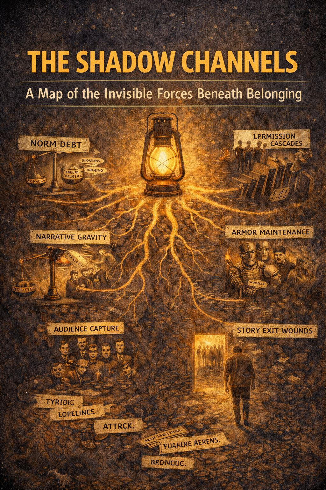

Identity doesn’t happen in the open.
Most of what shapes loyalty, panic, conformity, resistance, and escape runs under the floorboards of daily life.
The Shadow Channels are the hidden forces that govern how groups hold together, how they fracture, and how individuals decide whether to stay or step away.
This guide introduces seven of the most reliable subterranean currents working inside human communities and personal identity:
The unspoken costs we pay to stay accepted: silence, agreement, self-editing.
The pull of powerful stories that keep us in orbit long after the meaning has run out.
How one honest voice can unlock a whole room of people quietly thinking the same thing.
The defensive behavior people use to protect identity rather than truth: outrage, dismissal, righteousness, attack.
The invisible crowd we speak to, online, in our heads, or in imagined judgment, shaping how we behave.
The collective mask a community wears, and how individuals blend into it whether they mean to or not.
The grief, pain, confusion, and loneliness that follow when we leave a tribe, belief system, story, or identity we once belonged to.
Each Shadow Channel will be explored in its own document, with:
This is not a diagnostic system.
It is not a weapon.
It is a lantern.
Use these ideas to name dynamics instead of drowning in them.
Use them to move through identity shifts with clarity instead of panic.